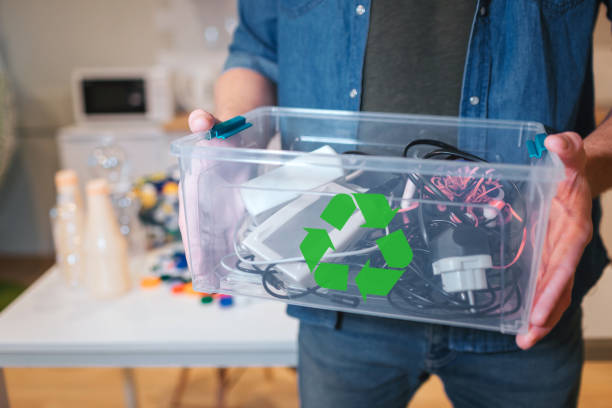
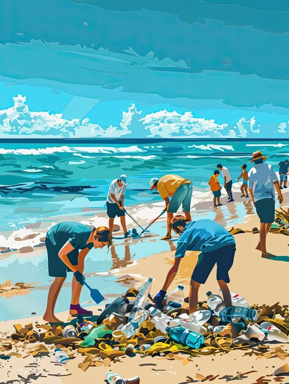
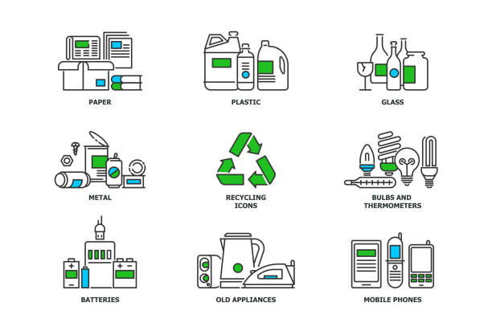
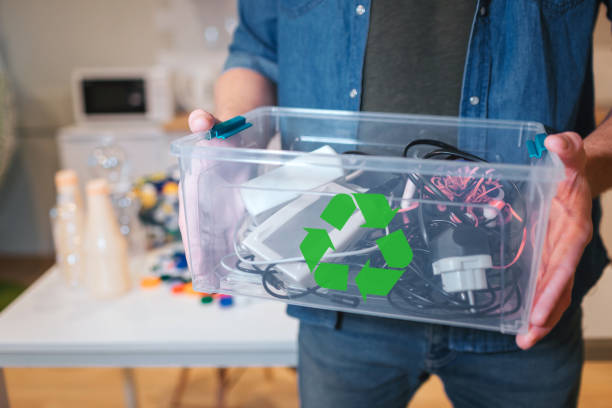
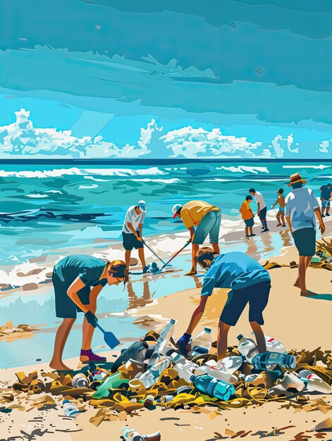
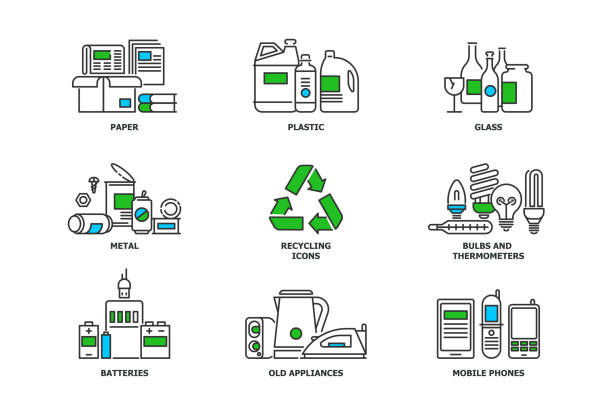
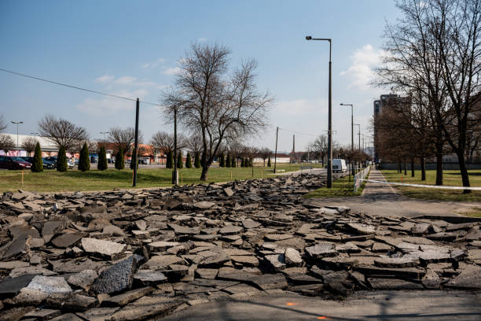
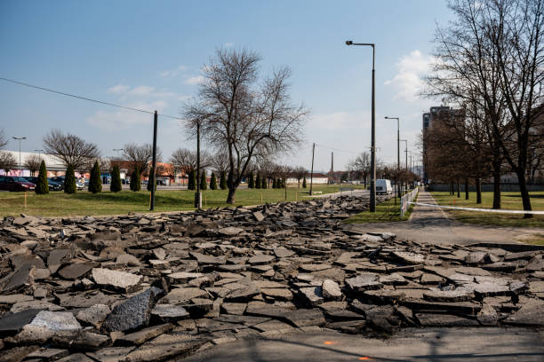
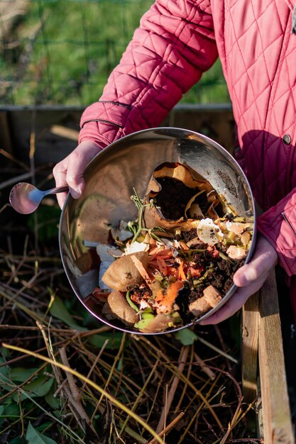
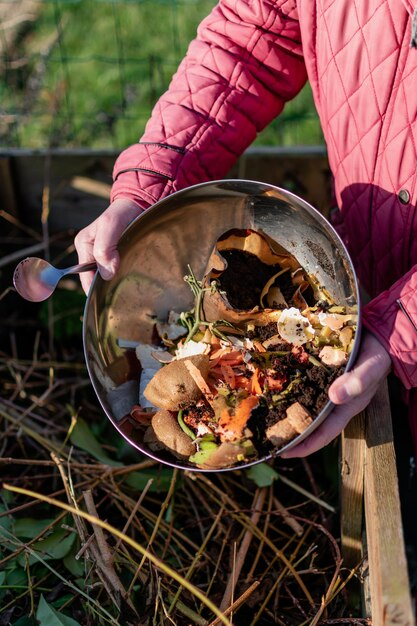

Introduction
Welcome to the Recycling section of Green Fair, your comprehensive guide to understanding the critical role
recycling plays in fostering a sustainable future. At Green Fair, we are committed to promoting eco-friendly
practices, and recycling stands at the forefront of our initiatives. This section will delve into the
importance of recycling, its environmental benefits, various methods, and practical tips to help you
incorporate recycling into your daily life. Additionally, we will highlight some innovative recycling
projects and success stories that inspire positive change.
The Importance of Recycling
Recycling is not just a buzzword; it is a vital practice that significantly impacts our environment. By
converting waste materials into new products, we can reduce the consumption of fresh raw materials, lower
energy usage, decrease greenhouse gas emissions, and minimize air and water pollution. Here are some key
reasons why recycling is essential:
- Conservation of Resources: Recycling helps conserve finite natural resources such as
metals, minerals,
and timber. By reusing materials, we reduce the need for new raw materials, preserving natural habitats
and ecosystems.
- Energy Savings: Manufacturing products from recycled materials typically requires less energy compared
to producing them from virgin resources. For example, recycling aluminum saves up to 95% of the energy
needed to produce new aluminum from bauxite ore.
- Pollution Reduction: Recycling reduces pollution by decreasing the need for raw material extraction,
refining, and processing. It also lessens the amount of waste sent to landfills and incinerators, which
can release harmful chemicals into the environment.
- Climate Change Mitigation: By reducing energy consumption and lowering greenhouse gas emissions,
recycling plays a crucial role in combating climate change. For instance, recycling one ton of paper can
save 17 trees and prevent the release of 60 pounds of air pollutants.
- Economic Benefits: Recycling creates jobs in the collection, processing, and selling of recycled
materials. It also stimulates the development of green technologies and industries, contributing to
economic growth and sustainability.
Methods of Recycling
- Curbside Recycling: Many communities offer curbside recycling programs where residents can place
recyclables such as paper, cardboard, glass, and plastics in designated bins for collection. These
materials are then transported to recycling facilities for sorting and processing.
- Drop-off Centers: Drop-off centers are locations where individuals can bring their recyclable materials.
These centers accept a wide range of items, including electronics, batteries, and household hazardous
waste, which may not be collected curbside.
- Buy-Back Centers: Buy-back centers purchase recyclable materials from consumers. These centers often
focus on high-value materials like aluminum cans and glass bottles, offering monetary incentives for
recycling.
- Deposit/Refund Programs: Some regions have deposit/refund programs where consumers pay a small deposit
when purchasing beverages in recyclable containers. The deposit is refunded when the container is
returned to a recycling facility.
- Composting: Composting is a natural process that converts organic waste, such as food scraps and yard
trimmings, into nutrient-rich soil. This method reduces landfill waste and provides a valuable resource
for gardening and agriculture.
Practical Tips for Recycling
- Know What to Recycle: Familiarize yourself with your local recycling guidelines. Different communities
have varying rules about what materials are accepted. Commonly recyclable items include paper,
cardboard, glass, plastic bottles, and aluminum cans.
- Proper Sorting: Properly sort your recyclables to ensure they are accepted by your recycling program.
Clean and rinse containers to remove any food residue, and separate materials according to your local
guidelines.
- Reduce and Reuse: Before recycling, consider ways to reduce and reuse items. For example, use reusable
bags, bottles, and containers, and donate unwanted items to charity instead of throwing them away.
- Educate Yourself: Stay informed about recycling best practices and new developments in recycling
technology. Many resources, including websites and community programs, offer valuable information and
tips.
- Spread the Word: Encourage others to recycle by sharing your knowledge and enthusiasm. Participate in
community recycling events, and advocate for better recycling programs and policies.
Innovative Recycling Projects
- Plastic Roads: Some countries are using recycled plastic to build roads. This innovative approach not
only reduces plastic waste but also creates durable and cost-effective road surfaces.
- Ocean Cleanup Projects: Initiatives like The Ocean Cleanup aim to remove plastic waste from our oceans.
By developing advanced technologies to collect and recycle ocean plastic, these projects help protect
marine ecosystems.
- E-Waste Recycling: Electronic waste, or e-waste, is one of the fastest-growing waste streams. Companies
are developing innovative methods to recycle e-waste, recovering valuable metals and components while
reducing environmental harm.
- Clothing and Textile Recycling: The fashion industry is increasingly embracing recycling. Brands are
creating clothing from recycled materials, and initiatives like textile recycling programs help reduce
the environmental impact of discarded garments.
- Zero Waste Communities: Some communities are striving to achieve zero waste by implementing
comprehensive recycling and composting programs. These communities focus on reducing waste generation,
increasing recycling rates, and promoting sustainable living practices.
Success Stories
- San Francisco, USA: San Francisco is a leader in recycling and waste reduction. The city has implemented
strict recycling and composting regulations, achieving a landfill diversion rate of over 80%. San
Francisco's success demonstrates the power of strong policies and community engagement.
- Freiburg, Germany: Freiburg is known as Germany's "Green City" due to its commitment to sustainability.
The city has an extensive recycling program and encourages residents to participate in waste separation
and composting. Freiburg's efforts have resulted in high recycling rates and reduced waste generation.
- Kamikatsu, Japan: The small town of Kamikatsu aims to achieve zero waste by 2025. Residents separate
their waste into 45 different categories for recycling and composting. Kamikatsu's innovative approach
has significantly reduced landfill waste and serves as a model for other communities.
- Stockholm, Sweden: Stockholm has an advanced recycling system that includes automated vacuum collection
and waste-to-energy facilities. The city's integrated approach to waste management has led to high
recycling rates and reduced greenhouse gas emissions.
- Bangalore, India: Bangalore is making strides in e-waste recycling. The city has established dedicated
e-waste collection centers and partnered with recycling companies to properly process and recycle
electronic waste. Bangalore's efforts help address the growing e-waste problem and promote responsible
disposal practices.
Methods and Techniques
- Household Recycling
- Segregating waste into recyclable and non-recyclable categories.
- Encouraging the use of biodegradable products.
- Promoting community recycling programs.
- Industrial Recycling
- Implementing zero-waste manufacturing processes.
- Recycling industrial by-products and waste materials.
- Utilizing scrap materials in production processes.
- E-Waste Recycling
- Establishing e-waste collection centers.
- Promoting the refurbishing and reuse of electronic devices.
- Ensuring the safe disposal of hazardous components.
Join Us
Recycling is a cornerstone of sustainable living, offering numerous environmental, economic, and social
benefits. By understanding the importance of recycling, adopting practical recycling practices, and
supporting innovative recycling projects, we can all contribute to a greener, more sustainable future. At
Green Fair, we are dedicated to promoting recycling and other eco-friendly initiatives, empowering
individuals and communities to make a positive impact on the planet.
↑
 






 

 
